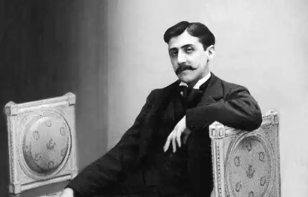

МАРСЕЛЬ ПРУСТ
(1871 — 1922)
Письменник народився 10 липня 1871 у Парижі. Батько — Адрієн Пруст — відомий респектабельний лікар, який викладав медицину в університеті, мати — Жанна Вейль — єврейка за походженням, дочка багатого біржового маклера. Щасливі дні, проведені Марселем у дитинстві в Іе й в Отої — ці міста стали прототипами міфічного Комбре з його багатотомного літературного шедевру,— закінчилися, і надалі він проводив канікули з бабусею на морських курортах у Нормандії. З дев'ятирічного віку Пруст жорстоко страждав від астми (ця хвороба буде супроводжувати його упродовж всього життя і сформує своєрідний замкнутий характер письменника). Літературний талант Пруста виявився ще в роки навчання в ліцеї Кондорсе (1882-1889). Разом з іншими ліцеїстами юнак видавав рукописний журнал "Бузковий огляд", в якому у 1886 році з'являються перші оповідання юного генія "Затемнення" і "Хмари". У 1889 році Пруст закінчує ліцей і отримує ступінь бакалавра словесності. Наступні два роки (1889 — 1890) Пруст служив в армії в Орлеані. Після повернення до Парижа вчиться на юридичному факультеті Сорбони. Там він отримав учений ступінь з юриспруденції, а пізніше й з літератури. Під час навчання в університеті Пруст став завсідником паризьких салонів, зробивши сходження соціальними сходинками від буржуазних салонів до аристократичної вітальні графа Робера де Монтеск'є-Фезенака. У салоні мадам Арман письменник-початківець познайомився з Анатолем Франсом, завдяки якому зумів опублікувати свою першу книгу — збірник оповідань, есе й етюдів "Розради і дні" (1896), передмова до якого була написана самим А. Франсом. Метр французької літератури високо оцінив пробу пера юного літератора, хоча більшість критиків різко негативно відгукнулася на вихід збірника, характеризуючи його як твір дилетанта. "Розради і дні" створювались як полеміка з Гесіодом і його "Трудами і днями". "Краще мріяти про життя, ніж його проживати" — основна думка збірки, що червоною ниткою проходить крізь увесь твір. Дуже важливо, що вже в цьому першому творі Пруста з'являються численні теми, талановито розвинуті актором у головному його творі — "У пошуках втраченого часу": тема снобізму, швидкоплинної пам'яті, любові як ілюзорної цінності. Тонкий психологічний аналіз і миттєві імпресіоністські замальовки — характерні особливості творчості Пруста — вперше з'являються у "Розрадах і днях". У лютому 1907 року Пруст опублікував у газеті "Фігаро" статті, де спробував проаналізувати два поняття, яким призначено було стати ключовими в його пізній творчості, а саме — пам'ять і почуття провини. Улітку 1909 року він написав есе "Проти Сент-Бева"; згодом з цього есе виріс багатотомний роман, що його Пруст писав упродовж всього життя. У 1913 році роман отримав назву "У пошуках утраченого часу". У січні 1909 року, коли автор пив чай з черствим бісквітом, у його свідомості раптом промайнув давній дитячий спогад із глибин пам'яті, що ліг в основу роману "У пошуках утраченого часу". Він показав рукопис кільком редакторам, зокрема й Андре Жиду, і усі вони відхилили його, отож авторові довелося самому фінансувати видання першого тому. Перша частина цього мега-роману, "Шлях Свана", побачила світ у 1913 році, але пройшла повз увагу критики. Пруст планував випустити два наступних томи, але почалася Перша світова війна й до того ж загинув його особистий друг, секретар і водій, Альфред Агностеллі (він розбився на аероплані, що подарував йому Пруст). У 1914 році Андре Жид змінив своє рішення і запропонував Прустові опублікувати його твір. Другий роман, "У квітучому саду" (1918), був визнаний гідним престижної Гонкурівської премії. Так Пруст несподівано став знаменитим. Увесь цикл складався з семи книг. До своєї смерті від пневмонії в 1922 році Пруст встиг опублікувати ще дві з них: "У Германтів" (1921) і "Содом і Гоморра" (1921). Інші були опубліковані посмертно його братом Робе-і ром при участі Жака Рив'єра і Жана Польяна, директорів літературного огляду "Nouvelle Revue Francaise": "Полонянка" (1923), "Зникла Альбертіна" (1925), "Знайдений час" (1927). В останні роки свого життя Пруст активно брав участь у ще одному публічному проекті — він фінансував гомосексуальний публічний будинок, у якому розмістив меблі, що дісталися йому в спадок від батьків, а керуючим став його юний друг. Альбер ле Кузьє. Пруст був частим гостем цього закладу, що послугував моделлю борделя Жуп'єна в романі "У пошуках утраченого часу". Біограф Пруста Джордж Пейнтєр вважає, що бичування закованого в ланцюги барона де Шарлюса у вигаданому Прустом борделі Жюп'єна — "це усього лише простий опис пережитого самим Прустом мазохістського досвіду" у закладі Альбера ле Кузьє. Помер Марсель Пруст 18 листопада 1922 року від запалення легень у своїй оздобленій корковим дубом спальні, де провів останні роки свого життя, прагнучи ізолювати себе від паризького шуму та бруду. Популярність Пруста зумовлена ще й тим, що він став першим сучасним письменником, який описав гомосексуальність у літературній формі. Його складний аналіз гомосексуальних персонажів своїх романів дав новий поштовх дискусії на цю тему у відриві від її колишнього медичного тлумачення. Будучи геєм, який пише про життя геїв, Пруст створив і представив на суд читачів набагато докладніший портрет гомосексуальності, аніж це міг би зробити будь-який психотерапевт чи ранні апологети руху гомосексуалістів за свої права. Більше того, його обговорення гомосексуальності залучило до цієї теми широку аудиторію і послугувало гарантією того, що відтоді були зняті усі табу з теми, що до цього була за сімома дверима. Поряд із творчістю Андре Жида твори Пруста затвердили статус гомосексуальної теми у світі сучасної літератури. Особливо треба зазначити втрату Прустом повноти історичного мислення, досягнутого критичним реалізмом: зосередивши свою увагу на зображенні психології і приватного життя людини, Пруст надто багато чого не бажав бачити в живій історії. Але залученого до його роману матеріалу достатньо було для того, щоб підтвердити незаперечний історичний факт: час історичного буття буржуазного суспільства минув, і процес цей незворотний. "У пошуках утраченого часу" "У пошуках утраченого часу" — це, мабуть, найосяжніший роман двадцятого століття; це роздуми про природу часу, пам'яті, про сенс людського існування. Усупереч розхожим думкам, почавши читати цей роман, уже неможливо зупинитися. Глибинна суть роману абсолютно нерозривно пов'язана з темою гомосексуальності, що на його сторінках одночасно й оспівується й, притлумлюється. Оспівується, оскільки у Всесвіті Пруста більшість персонажів згодом стають гомосексуалами. У другій частині книги домінує незабутній барон де Шарлюс — цей святий-заступник гомосексуалістів. Затінюється в тій сюжетній нитці, що стала відома як "стратегія Альбертини", за допомогою якої узятий з реального життя коханець Пруста Альфред у романі перетворюється на жінку на ймення Альбертина для того, щоб приховати від оточення сексуальну орієнтацію Марселя, від імені якого ведеться оповідь (хоча за ходом сюжетних хитросплетінь роману, Альбертина, на превеликий жаль "гстеросексуального" Марселя, стає лесбіянкою). Винятково важливими для палкої дискусії на початку нашого століття про гомо-сексуальність є два фрагменти роману — обоє з початку "Содому і Гоморри". Перший — це гротескний опис стосунків "квітка, що запилюється", котрий малює потяг барона де Шарлюса до кравця Жуп'єна. Тут явно відчувається сарказм із приводу панівної на той час "наукової" моделі гомосексуалізму. Другий — більш революційний — великий, палкий панегірик гомосексуальній "расі", расі, історія якої, згідно з Прустом, має багато спільного з історією єврейського народу: "Раса, над якою зависло прокляття і яка змушена жити в неправді і підступності, оскільки знає, що її бажання — те, що становить для неї найбільшу насолоду в житті,— є карним, ганебним, неприпустимим... Закохані, котрі майже відкидали саму можливість своєї любові — любові, що була для них єдиною надією подолати численні небезпеки і таку довгу самотність... Вони постійно ризикують честю, їхня свобода тимчасова — існує лише доти, доки вони не будуть викриті; їхнє становище в суспільстві нестабільне, як у поета, спочатку приголубленого в кожній вітальні, зустрінутого громом оплесків, у кожній лондонській театральній виставі, а потім гнаного звідусіль, котрий ніде не може знайти притулки... це товариство масонів, але із набагато складнішою структурою, що більш ефективно діє і менш "засвічене", аніж ложі справжніх Вільних Мулярів, бо опирається це співтовариство на схожості смаків, потреб, звичок; їм загрожують ті ж небезпеки, вони змушені осягати ті самі життєві премудрощі, вони говорять лише їм зрозумілою мовою, і будь-який член цього співтовариства завжди може відразу ж упізнати іншого, навіть не будучи з ним знайомим... це нечестива частка людського поріддя, але вона відіграє в ньому важливу роль, то не афішуючи свого існування, то виставляючи себе напоказ — нахабно, зухвало, з'являючись там, де їх найменше очікували побачити, маючи повсюдно своїх прихильників: серед простих людей, в армії, у церкві, у в'язниці, на монарховому троні..." ОСНОВНІ ТВОРИ: "Розради і дні" (1896), "У пошуках утраченого часу": "Шлях Свана" (1913), "У квітучому саду" (1918), "У Германтів" (1921), "Содом і Гоморра" (1921), "Полонянка" (1923), "Зникла Альбертина" (1925), "Знайдений час" (1927). ЛІТЕРАТУРА: 1. Андреев Л.Г. Марсель Пруст.— М., 1968.; 2. Бочаров С.Г. Пруст и "поток сознания" // Критический реализм XX века и модернизм.— М.,1967.; 3. Ортега-и-Гассет X. Эстетика. Философия культури.— М., 1991.